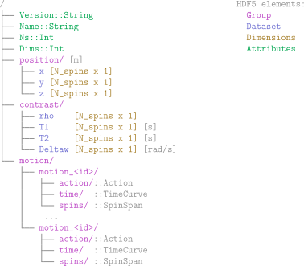
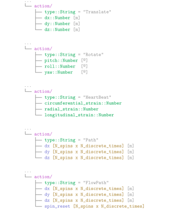
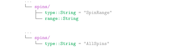

Phantom File Format
Introduction
While there is already an open and fairly standardised format for MRI sequences such as Pulseq, this is not the case for digital phantoms. That's why we defined a new .phantom format, which relies on the HDF5 standard. HDF5 is specially designed to store large amounts of heterogeneous data and to make it readable and writable quickly and easily. In addition, it allows the storage of metadata. For all these reasons, it is the ideal file format for storing phantoms.
Phantom File I/O
The KomaMRIFiles module provides two key functions for working with .phantom files:
read_phantomloads a.phantomand converts it into aPhantominstance.write_phantomconverts aPhantominstance into an HDF5-based.phantomfile.
File Format Specification
This section describes the internal structure of the .phantom file. While most users will interact with phantoms via the KomaMRI tools, this section is intended for developers who wish to implement support for the format in other applications or workflows.
Phantom File Tree

Action types

TimeCurve
SpinSpan types
